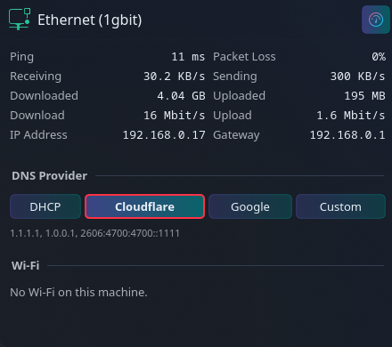

See your connection
Find your Ethernet link speed or Wi-Fi network name, IP address, and gateway in one place. The panel icon follows your connection type and wireless signal.

KDE Plasma 6 · Free & open source
Your network at a glance. Check your connection, watch live traffic, switch DNS providers, and manage Wi-Fi—all from your Plasma panel.
I made kOMA Network Manager because I wanted connection details and everyday network controls together, without opening several tools. Inspired by Omarchy, it brings that convenience to KDE in a widget that follows Plasma’s look and feel.
Find your Ethernet link speed or Wi-Fi network name, IP address, and gateway in one place. The panel icon follows your connection type and wireless signal.
See ping, packet loss, receiving and sending rates, and downloaded and uploaded totals while the popup is open.
Sample download and upload speeds through Cloudflare’s speed-test service. Pause samples with the header’s speedometer button.
Choose DHCP, Cloudflare, Google, or your own DNS servers. Changes apply to Ethernet and Wi-Fi connection profiles through NetworkManager.
Browse known and nearby networks, connect or disconnect, forget a saved network, or turn Wi-Fi on and off. KDE’s own prompt handles passwords.
The widget uses your Plasma style, color scheme, and icons. The bundled komanet command also exposes connection details and controls from the terminal.

Opening the popup starts ping probes and repeated speed samples, which use your connection. Pause speed tests from the header; closing the popup stops further samples. With the popup closed, the widget only reads local connection state.
Free, open source, and MIT licensed. Find the source, installation instructions, and downloadable Plasma widget on GitHub.
View kOMA Network Manager on GitHub →Requires KDE Plasma 6, NetworkManager, and Python 3.11 or newer. See the repository for full requirements and DNS permissions.